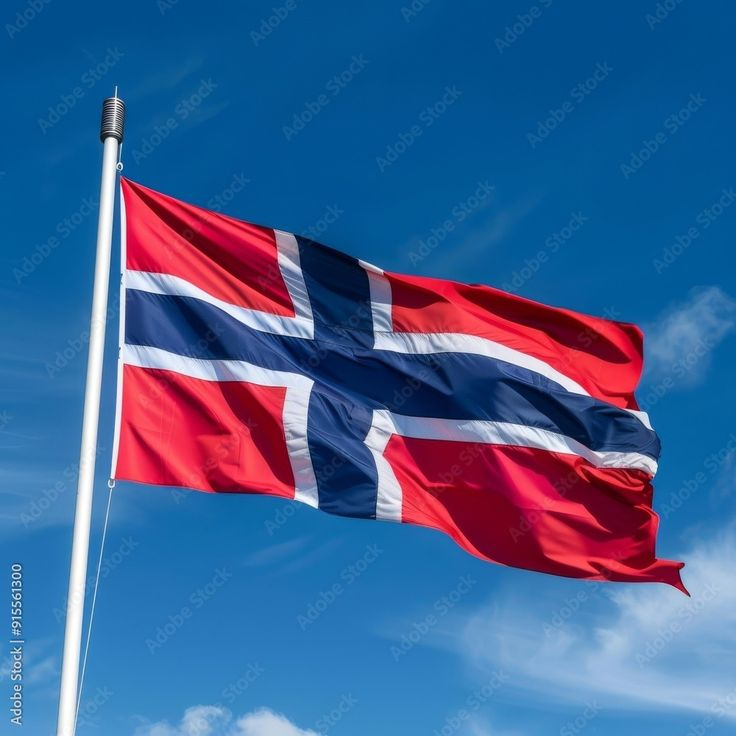
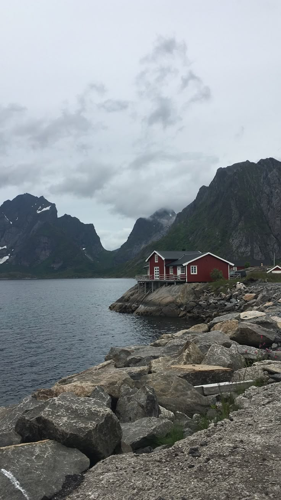

Norway is a country in the north of Europe. It is famous for its beautiful nature — high mountains, deep fjords, and cold, clean water. Many people visit Norway to see the Northern Lights, which are colorful lights in the winter sky. The weather is cold, but Norwegians like to spend time outside. They ski, hike, and fish even when it is snowing.


The capital of Norway is Oslo. It is a modern city with museums, parks, and a famous opera house. Norway is also a very safe and rich country. Many people speak English well, so it is not hard for tourists or students. If you dream about living or studying in Norway, you can make it real with hard work and good English.
Click the menu ☰ to get started!